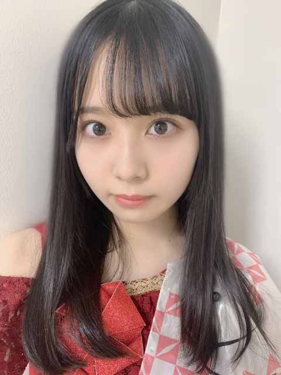
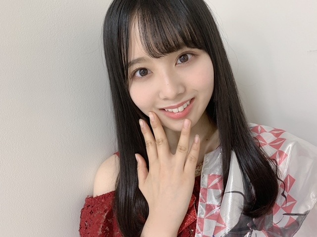

2020/1030Fri白石麻衣さん。佐藤璃果
白石麻衣さん卒業コンサート
「Mai Shiraishi Graduation Concert ~
Always beside you ~」
私にとって初めての先輩方とのライブは
白石さんの卒業コンサートになりました。
乃木坂46 （新）4期生 岩手県出身
佐藤璃果です。

白石麻衣さん、
ご卒業おめでとうございます。
私が白石さんに関われた時間は
本当に本当に短くて、。
それでも楽曲中に笑顔で迎えてくれる
白石さんは本当に優しくて。
ライブ中の白石さんの言葉に
何度も心を動かされました。
イヤモニから流れてくる、
白石さんの心が籠った透明な歌声に、
今まで以上に感動し、心を揺さぶられました。
初めての先輩方との現地でのリハは、
実は怖くて不安でした。
そんな中、
一人一人が白石さんの横に行き、
歌う時に目を合わせて笑って下さった時、
私も心の底から笑顔になれたし、
嬉しくてどうにかなりそうでした。
女神様です。
本番中、｢サヨナラの意味｣で
腰に回した手でポンポンとしてくれた時に
優しさが全身に巡って
顔が溶けました。
白石さんと一緒にステージに立たせて頂ける事が本当に嬉しくて、有難くて。
毎回毎回噛み締めていました。
白石さんと先輩方が笑っているだけで
幸せになれました。
白石さんと先輩方が泣いている時、
目に涙がたまりました。
もっと自分も成長して、
何らかの形で乃木坂46のために出来ることを
考えていきたいです。
笑顔も涙もあんなに美しい人はいません。
華麗な白石さん。ずっとずっと憧れです。
ずっと幸せな日々を送れますように。
もう上手く言葉に出来ないけど、
あの時間は不思議な時間で今思い返しても現実なのか自分で分かりません。
異世界にいたようなそんな気持ちです。
たくさん水色の綺麗な景色を見ました。
水色が輝いてみえる。
水色が尊く見える。
そんな時間でした。
最近テレビ番組でも披露されている
白石さんが好きだと言っていた楽曲。
｢今、話したい誰かがいる｣
中学生の時何度も何度も動画を見て
見よう見まねで踊っていました。
私もあの曲が大好きです。
"一人でいるのが 一番楽だった
誰かと一緒にいると 僕は僕じゃない"
"目の前にはいつもヒントがあり
紛れもない過去の答えがある
あきらめるなら一人でいいけど
夢を見るなら君と一緒がいい"
音楽も歌詞も大好きです

衣装キラキラ可愛いね。
こちらは｢世界で一番 孤独なLover｣
の時の衣装です。
ペアダンスのペアは黒見ちゃんとでした♡
衣装集、また載せますね。
皆さん、
これからも
どうぞよろしくお願いします。
大好きな乃木坂46がずっとずっと
続いていきますように。
自分も少しでも力になりたいです。
一緒に歩んで成長していきたいです。
もっと乃木坂の良さを
色んな方に知って欲しいです。
乃木坂を見て幸せになって欲しいです。

お気に入りです。( ¨̮ )
白石麻衣さん、ありがとうございました。
9年間おつかれ様でした。
これからも大好きです。
~~~~~~~~~~~~~~~~~~
〇10月30日、月刊エンタメさん 発売
ソログラビアが掲載されています❁
付録には私のポスターも付いてきます！
スタイル抜群の先輩、
梅澤美波さんが表紙です！
〇10月31日、ひかりTV・dTVチャンネルさん｢山崎怜奈とおはつちゃん｣
大好きなものに関する
お初の事に挑戦させて頂きました❁
山崎怜奈さんと沢山お話出来て本当に嬉しかったです。
よろしくお願い致します！
上記2つについて
また今度沢山お話させてくださいね。
オフショットも載せたいなぁー
~~~~~~~~~~~~~~~~~~~
今日は10月30日！
10月生まれの皆さん
お誕生日おめでとうございました。

今回の皆さんへの誕生日ケーキは、、、
クリームチーズとココアパウダーで、
"チョコレートチーズケーキ"
を作ってみました！
甘味料にラカントを使い、ヨーグルトも入っているので良いですね✌︎
真ん中らへんのちょっとレア具合が
好きです！
素敵な一年になりますように。
~~~~~~~~~~~~~~~~~~~
明日はるなぴです。
お疲れ様です！！！
~~~~~~~~~~~~~~~~~~
皆さんにとって
素敵な1日になりますように。

またね。
#37 りか
コメント(305)
まいやんのライブほんとに感動した！いつかりかちゃんもまいやんみたいに乃木坂を引っ張る存在になって欲しい！
頑張ってください
質問です
りかちゃんはわんこそば何杯食べた事ありますか？
更新ありがとうね。
まずは白石さんの卒コン、本当にお疲れ様でした。
4期生は白石さんと関わることができた時間っていうのは確かに短かったと思う。でも、時間じゃなくて大事なのは乃木坂に入って同じメンバーとして一緒の時間を共有できたってことだと思う。そこに意義があるはず。
これから璃果ちゃんが乃木坂で過ごしていく時間は白石さんと過ごした一昨日までの時間の何十倍何百倍って単位だろうけど必ず意味を持ちます。
だから卒業してしまっても憧れや尊敬の気持ちはそのままで良いと思うよ。歴史を風化させずに自分自身の成長への教科書にしていこうね。
いきなりの大舞台で大変だったよね。でも笑顔でパフォーマンスできててカメラ目線も決まってて良かったよ！
改めて、本当にお疲れ様でした。
そう言えばロケ楽しかった？？笑
お芋食べに茨城にきてね。（茨城在住民より）
たーくん
夜明けまでとサヨナラの意味でりかちゃんとまいやんが並んでるのもりかちゃん推しとしてもなんかエモかったなー｡サヨナラの意味は特に泣いた
乃木中で言ってたけどまいやんの作った伝統を守っていってね笑笑
まいやんの卒コンもお疲れ様！自分はその時間まで部活が
あって見れなかったけど、また何かの機会で見たいと思います
まいやんとの思い出ができてそうで良かったです！
自分が言うのも何ですが、大切にして下さいね！
というか衣装似合いすぎです！
早く璃果ちゃんが舞台に立ち歌い、踊る姿を生で見たいな
あっ握手会とかミーグリもね！
とにかくいつまでも璃果ちゃんと会うことを楽しみにしてますよ
そして毎月楽しみ(？)な誕生日ケーキ璃果ちゃんは
料理上手すぎです。何も作れない僕に
教えてほしいくらいです！
今日もお疲れ様明日も頑張ろ〜
今日はりかちゃんを
間近に見てからちょうど
一年の記念日です。
去年はハロウィンも
一緒だったね
まいやんの卒コン
サヨナラの意味は
りかちゃんがまいやんと
並んでるところを
10回くらいループした
間に合ってよかったねって
思ったよー
ちょっと前に卒コンの
りかちゃんタオルも
届いてたよ
今日は朝から
エンタメ買ってきて
りかちゃんポスターは
すでに壁にいるよ。
感想はまたじっくり
見てからね。
またね。
まずはお疲れ様でした！本当に感動しました。
りかちゃんのセカラバかわいかったしかっこよかったです。
まいやんと向き合って笑っていたサヨナラの意味は
涙が止まりませんでした。寂しくなるね( ；ᵕ； )
すごく感動するいいコンサートだったなと(T_T)
はるかはりかちゃんのパフォーマンスが見れて幸せでした♡
5日後の更新楽しみにしてるね⸜( •ᴗ• )⸝またね！だいすき！
一昨日は、ライブお疲れ様でした。
新4期生（もう新とつけるのも気が引けますが…）は白石さんよ卒業ライブが全体初めてのライブだったんですね。
みんな凛としていたので、全然そんな感じはありませんでした。
4期生は白石さんと過ごした乃木坂での時間は短いけど、長い間白石さんの背中を見てきた1,2,3期生の先輩方も同じ背中をしているはずです。そんな先輩方に着いて行けば、必ず輝ける日は来ます。その時まで、一緒に坂を上りましょう。
弱気になっても、後ろを振り返ってもいい。
焦らずに、ゆっくりと上りましょう。
僕たちファンも足並みを揃えていきます。
ファイティン
まいやん綺麗だったね✨
衣装かわいいい！
(更新待ってましたから更新ありがとうに変えました！)
次まで待ってるね〜
卒業コンサートみました！
新4期生は特に短い期間でしたよね。
本当に感動しました。
サヨナラの意味の時に泣いちゃいました。
本当にメンバー好きでメンバーのみんなも
まいやんがすきなんだなと感じました。
今、話したい誰かがいる
1番好きって言ってた気がします。
歌詞が心に響きますよね。
セカラバの衣装！
めちゃくちゃ似合ってます
かわいいです！
オフショットなど楽しみにしてます！
月刊エンタメも買います！
チーズケーキなんですね、すごい！
隣のってマスカットですか？
ちなみに僕は11月生まれです。
ノギザカスキッツお疲れ様でした！
ACT 2もやることが決まっているみたいで
とても楽しみです！
かつ家の璃果ちゃんが第二回では
ランクインすると信じてます！笑
またね。
りかてん~！
10.17誕生日だったからありがとう！♡♡♡
いつか会える日が来ますように…。
୨୧⑅*.
ライブ観ました！とても素敵でした！！
次のブログも楽しみにしてます！！
〜璃果ちゃんに質問〜
・年を越す前にしておきたいことってある？
・最近ハマっていることを教えて！
まいやんの卒コンは、とても素敵なライブでしたね！
改めて、りかちゃん含めた乃木坂のメンバー大好きになりました。
りかちゃんのライブの姿、初めて観ました。
緊張していたのだろうけど、堂々とパフォーマンスしていて、頼もしく思えました。
これからも、ライブでのりかちゃんの姿観れるのがとっても楽しみです！
次回のブログも楽しみにしてますね！
ブログ更新ありがとうございます！
「NOGIZAKA46 Mai Shiraishi Graduation Concert〜Always beside you〜」お疲れさまでした。
ファン歴の浅い僕は白石麻衣さんのたどってきた道の全てはわからないけれど、乃木坂を好きになる前からそのお名前だけは色々なところで見聞きすることがあったので、やっぱりすごい方なんだなと改めて感じさせられました。
でもこれからは、りかちゃんたち新世代のメンバーがグループを引っ張っていく重要な存在になると思うので期待しています。こういうことを言い過ぎるとプレッシャーになってしまうかもしれないのですが、僕にできることは応援すること、信じて期待することだけなので。
そんな中、まずはノギザカスキッツACT2が直近で4期生ちゃんの見せ場だと思うので、楽しみにしています。
3期生メンバーも登場とのことですが、りかちゃんは3期生との絡みはあったんでしょうか？もしそんな場面があったら嬉しいです……
これからも乃木坂46を、4期生のみんなを、りかちゃんを応援し続けます！！
次回のブログ、衣装集も待ってます！ではでは！
りかわ いい 。。
５日間が 長く感じるよ..
モバメ 早く 始まると いいのになあ
りかに 。。
ライブお疲れ様でしたm(_ _)m
配信ライブ観ました♪
すごく良かったです(*^^*)
今日もブログ更新ありがとうm(_ _)m
白石さんの卒コン、画面越しに観てました！
今まで、そこにいるのが当たり前だと思っていたことが次の日から無くなってしまうという喪失感と、最後の晴れ舞台で最高に煌めいてた白石さんの美しさ、メンバー全員が白石さんのことを愛しているあの空間の尊さに、心を奪われ
ました。
何回涙が出たか全く覚えてないや笑
とても素晴らしいライブだと感じました。。
璃果ちゃんも乃木坂46としての初ライブ、本当にお疲れ様！
他の先輩メンバーにも見劣りしないなぁと個人的に思った！推してるってのがあるからかな？笑
でもほんとに綺麗だったよ！
乃木坂46佐藤璃果ちゃんの今後の活動、楽しみにしてます(^^)
寒すぎて手がかじかんできたので、今日はこの辺で。
一気に寒くなったなぁ、うへぇ、、鼻がズビズビです。。
長々とすんません！
そんじゃ、また！！
サヨナラの意味でのまゆたん、まいやん、さとりかちゃん３人が揃った時推しメンたちでとても感動した！！
乃木坂第二の時代が始まったけどこれからの乃木坂の動向が楽しみです！応援してます！
サヨナラの意味で璃果ちゃんが白石さんと並んでる姿印象に残ってます！
偉大な先輩の卒業は悲しいけど新しい乃木坂にも璃果ちゃんにも期待しています
まずは、先日終わりたてホヤホヤな「先輩の卒コン」無事に完走＆先輩の最後の雄姿を見守ってくれてありがとう＆お疲れ様ぁ～ヽ(^o^)丿
僕は、チケットも持ってなかったし、LIVE自体そんなに好きではないし、僕のLIVEと言ったら「今年６月の４６時間ＴＶ」の最終日のやつがＬＩＶＥだと思っているよぉ～(笑)( *´艸｀)
新４期ちゃんの５人は、初めての先輩を「見送る側」として、一番身近で見守ってくれたね♪
僕も当日は「今、ＬＩＶＥ始まったのかなぁ～」とか「今、何の曲歌ってるんだろう・セットリスト見たかったなぁ～」っていろんな事を考えながら、テレパシーで３・４期ちゃん達に「今日は悲しい涙は流しちゃダメだぞぉ～？美しい未来へと繋がる涙は流してもいいぞぉ～(笑)( *´艸｀)」って思いながら当日は過ごしてたよ。
そして僕も丁度、乃木坂を好きになって、知人の乃木ファンの人から強引に(笑)見せられたＰＶが１３ｔｈの「今、話したい誰かがいる」だったから、当時の事を思い出してた。りかちゃんのブログを読んでたら。
（ＰＶでは僕の得意分野である、手話を主体としたＰＶになってるから、ちょっと見てくれぇ～っていわれたのが、乃木坂を好きになるきっかけ♪）
今回の卒コンを通して、りかちゃんも「心の中に、先輩から貰った「特別な新芽」が出ているのが僕には見えているよぉ～」♪
その新芽は「水をあげてれば、育つわけじゃなくて、りかちゃん自身が大きく成長・乃木活を沢山していけばいくほど、育っていく特別な新芽」だと僕は思っているから、これからも大きく成長していってね☆彡
僕自身も、１８～２８歳の時には実際に「手話指導者」という「キャプテン」の座にいたし、「出会いと別れ」はもう、何十・何百回と経験してきてるから痛感できるけど、そんな僕の想いもこれからは「３・４期ちゃんの成長」というのを見て、僕は見守っていきたいなぁ～って思ってるんだから♪
そして、りかちゃんも僕に取って見れば「大切な乃木メンという妹達の１人」なんだからぁ～ヽ(^o^)丿それ位はできないと、お兄ちゃんじゃないと思うし、それが役目だと思っているから♪
今日の写真。一部「お腹がすく」感じな写真が入っているけど(笑)どれも、「まいやんから貰った沢山の優しさ」であふれ返っていて、まるで「満天の星空の下にりかちゃんがいるような写真」に見えたよぉ～。それくらい輝いてたヽ(^o^)丿
それじゃあ、これからもそんな想いを大切にしながらいつもの「日常」に戻ったけど、次のブログもめっちゃ楽しみにしてるねぇ～ヽ(^o^)丿また５日後に会おうね♪
明日も一日！一緒にお家時間を楽しもうね♪大好きだよ♪リカロットお嬢様☆彡
最後の最後に１フレーズだけ歌詞のプレゼント♪
「人生はあっという間だ！」 ジコチューで行こうより。
お疲れ様でした、感動しました！
可愛い！似合ってます
卒業ライブばっちり見ました〜
4期生の夜明け、しっかり決まってました〜
またライブ行けるようになるのが楽しみ〜
質問
好きなお菓子とかありますか〜？
璃果ちゃんブログ更新ありがとう！
世界で一番孤独なLoverの時の
璃果ちゃんが凄く良いポジションで
嬉しかった〜！！
璃果ちゃんもみんなから卒業を惜しまれるような
偉大なメンバーになるんだろうな〜
4期はこれからの乃木坂を引っ張っていく人達
きっと先輩方のように輝ける
一緒に頑張ろうね
ライブお疲れ様でした！りかちゃんがまいやんと並んで歌ってるところを見て、やっとりかちゃんが先輩とライブに出るところを見られた、、、ってとっても感動しました！！後ろのほうにちらっと見えた時もきらきらしてて笑顔が可愛くて、あぁとっても乃木坂らしいなぁ素敵だなぁって思いました。これからもっとりかちゃんのことを見られると思うと凄く嬉しいです。先輩たちとの別れを経験しながら、どんどん成長していくりかちゃんをずっと応援し続けようと思いました。あらためて大好きになりました！
これからもりかちゃんのこと推し続けていいですか？？
卒業…辛いよね…
これからの乃木坂新時代頑張ってICO‼️
卒業…辛いよね…
これからの乃木坂新時代頑張ってICO‼️
さくらちゃんとあやめちゃんと楓さんと同じ愛知県出身の愛知の覇王です！
蓮加ちゃんと同じ高校2年生、同じ2月生まれです！
白石麻衣さんの卒業コンサート、お疲れ様！
サヨナラの意味の時に白石麻衣さんが璃果ちゃん手でポンポンしていたシーン、めっちゃ感動したよ！
白石麻衣さんにポンポンされて良かったね！
明日のおはつちゃん楽しみにしてるよ！
これからもずっと応援するので、頑張ってください！
とても楽しかったですね！！
まいやんの卒コンだけど璃果ちゃんが映ったときには璃果ちゃんにばかり目が行ってすごく嬉しくてテンション爆上がりでしたよ！
自分の住んでる地域ではノギザカスキッツ2週間遅れでO.Aなんです、、
今週観たのは保険ポリスに璃果ちゃんが出ていておっちょこちょいな感じがすごく可愛かったです！！
質問です
璃果ちゃんがノギザカスキッツで主役をするならどういうコントをやってみたいですか？
答えてくれたら嬉しいです^^
偉大な先輩が卒業しましたが、これからも精神一到の思いで、先輩に近づけるようにがんばってくださいね！
白石麻衣さんの卒業コンサート、とってもとっても素敵でしたね。白石さんに出会えて、推すことができて幸せだったと強く思えたライブでした。
少しですが、感想を書かせていただきますね
セカラバで璃果ちゃんが見えた時に嬉しすぎて、璃果ちゃんと白石さんが同じステージに立っているという事実だけでたくさん涙が溢れてきました。
｢夜明けまで強がらなくてもいい｣は4期生と白石さんのパフォーマンスでしたね。
璃果ちゃんと白石さんが目を合わせて微笑むところも、腰に手を回しているのもすごく素敵でした。
夜明けを踊ってる璃果ちゃんが本当にかっこよくて、綺麗で、可愛くて、好きだなぁ...ってなりました。
アーカイブ配信で何度も繰り返し見ました。
オーラがはんぱなかったです。
｢サヨナラの意味｣でも白石さんの隣に行くシーンがありましたね。イントロがかかっただけでもボロ泣きだったのに、璃果ちゃんが出てきたところでさらに泣いてしまいました。うまく形容できないけれど、とにかく幸せな瞬間でした...！
ガルルもめちゃくちゃ可愛かった！！！
上手く伝わっているかはわからないですが、大好きと幸せがたくさん詰まったライブになりました。
画面越しだったけど璃果ちゃんに少しでも想いが伝わってたらいいな...！
これからの璃果ちゃんが楽しみで仕方ないです。
本当に本当に大好きです。
心から応援しています！！！！！
(結局長くなってしまってごめんなさい
-----------------------------
ケーキめちゃくちゃ美味しそう！！
チョコレートもチーズも大好物なので夢のようなケーキですね...！！！
昨日(29日)が自分の誕生日だったので、璃果ちゃんに祝っていただけて幸せです
19歳らしく大人になれるよう頑張ります。笑
-----------------------------
月刊エンタメさんへの掲載、改めておめでとうございます！まだゲットできてないのですが、月刊エンタメさんがTwitterに載せてくださったフードを被ろうとしてる璃果ちゃんがめちゃくちゃ好きです。
｢アップトゥボーイ｣さんにも璃果ちゃんが掲載されるということで本当に嬉しいです！絶対買いますね
-----------------------------
質問です↓
・卒コンの期間で白石さんとお話することはできましたか？
・本番中やリハなどの裏話があれば聞かせていただきたいです！
・ハロウィンっぽいことは何かしましたか？
ぜひ教えてください～！
-----------------------------
今日で研修生ツアー初日から1年ですね...！
僕は参戦できなかったので、家でめちゃくちゃ悔しがってたのをよく覚えています。笑
いつか映像で見たいです
昨日くろみんがブログで紫のビブスを貰った時みんなで幸せをかみしめたと言っていて胸が熱くなりました。
これからもずっと応援してます。
いつもコメントが長くて文章もめちゃくちゃで本当にごめんなさい。
次回のブログも楽しみにしてます！大好きです！！
あきひろ
璃果さん、こんばんは。
いかがお過ごしでしょうか。僕は元気です。
まずは、白石麻衣さんの卒業ライブ、お疲れ様でした。
素敵なブログをありがとうございます。
璃果さんの想いを考えながら、自分の気持ちと照らし合わせながら読み進めていたら、自然と涙が溢れてしまいました。
誰に対しても分け隔て無く接し、自分自身と闘いながらも決して弱い姿を見せない強さを持ち、豊かな感情や美しい感性を持ち、坂道をどこまで上り詰めても決して驕らず、大きな優しさと責任感、グループへの愛情を以て乃木坂46を牽引し続けてきてくれた、かけがえのない存在でした。メンバーの誰もが、多くのファンが、白石さんに関する素敵なエピソードや白石さんの魅力を知っていて、その事実が彼女がどれほど強く優しく清らかで美しい方だったかを物語っているような気がします。その美しさや優しさはメンバーの誰もに夢や憧れ、目標を抱かせ、男女問わず多くのファンに愛され、幸せを与えてきました。その美しさや優しさこそ、乃木坂46が今日まで紡ぎ、育み、与えてきた“乃木坂46らしさ”なのではないかなと思っています。
乃木坂46 白石麻衣さんの9年間に、心から感謝と敬意を表します。
乃木坂46が大好きで、白石麻衣さんが大好きで、佐藤璃果さんのことが大好きです。だから、『サヨナラの意味』という乃木坂46にとっても特別な楽曲で、白石さんがメンバーひとりひとりと手を取り合い、肩を組み、目を合わせ、微笑み合った、あの時間はかけがえのない幸せな時間でした。璃果さんが白石さんのそばに歩み寄った時、涙が頬を伝ったことを覚えています。寂しさかな。嬉しさかな。そのどちらとも言えない涙でした。サヨナラを思うと寂しかったけど、乃木坂46が大切にしてきた愛情の形が白石さんから璃果さんに伝わる瞬間を見た嬉しさもありました。白石さんは、苦境こそあったものの、乃木坂46で過ごした9年間はとにかく本当に楽しく、幸せだったと言っていましたね。大好きなメンバーに囲まれ、共に歩み。たくさんのファンに愛され。支えてくれるスタッフの方々がいてくださる。アイドル人生を振り返った時にそう思えるなんて、本当に素晴らしいことだと思うのです。いつか、ずっと先かもしれないけれどいつの日か、璃果さんが卒業を迎えた時に、アイドルでいたことを、乃木坂46でいたことを幸せな時間だったと思ってもらえるように、僕はあなたを愛する1人で在りたいです。白石さんの姿を見て、今日の璃果さんのブログを読んで、強くそう思いました。
佐藤璃果さん、これからもよろしくお願いします！
月刊エンタメとおはつちゃんの感想は、また明日以降ここに書かせていただきますね。素敵なブログをありがとう。
おやすみなさい。またね。
璃果さん、大好き。
コメント、失礼します！
ブログ更新、ありがとう！
まいやんの卒コン、お疲れ様でした！
自分もしっかりと見れたよ。
まいやんとりかちゃんが同じ画角に映ってる最初で最後のライブだから、目に焼き付けましたよー。
りかちゃん可愛かったなー。
そして、まいやんは美しすぎましたね。
正しく発光してました笑笑
メンバーがまいやんの両隣に立って歌唱する場面が特に印象的だったなー。
まいやんがメンバー一人一人に優しい目線を向けて、これからの乃木坂を託してるって感じがしました。
皆美しい涙と笑顔が入り交じる、そんな表情をしてたね。
まいやんの乃木坂への強い思いをこれからも引き継いでいけると良いね。
でもりかちゃんたちを見てたら大丈夫そうだなー、これからの乃木坂も楽しみだなーと思ったよ。
月刊エンタメも見ましたよ。
紫のワンピースも部屋着っぽい服も似合ってて可愛かったなー。
それでは、この辺で。
おやすりかちゃんー
まいやんの卒コン見たよ！すごく感動したし、りかちゃんも頑張ってるの伝わってきたよ！
これからどんどん乃木坂の力になっていくりかちゃんを応援するのが楽しみです！
これからも頑張ってね！！！
顔が溶けましたで笑う。笑
いつもライブ行った時は、見る側なのに疲れた〜って気持ちが強かったから、しっかり休んでや〜(優しい)
｢今、話したい誰かがいる｣いいよね。
俺もそこの歌詞が1番好き！！心に染みます。。
今誰から乃木坂を好きになったから、個人的に思い出深いな〜
めっちゃ可愛いね!!衣装が!!!
嘘です。衣装 “も” ですね。訂正とお詫び申し上げます。
月刊エンタメ早速読んだよ！
マスカット食べたくなりました。(そこじゃない)
どの写真もいと美しきでしたが、窓際の写真と傘さしてる写真が好き！
手すりに掴まってる写真の髪型も良かった！マスk…(長くなりそうなのでここら辺で)
いや、最後にマスカットの写真の所の笑顔がめっちゃよか…(割愛)
最後の写真もよきやで。めっちゃ前に笑うの苦手みたいなこと言ってたけど、もうそんなことないのかな？僕にはそんな風には見えません。
もうちょっとで人生の分岐点レベルでめちゃめちゃめちゃ大事な試験があるから頑張るで(ง •̀_•́)ง
コメント書いてないで勉強しろやって感じなんですけどね。笑
璃果さんになら騙され
たいですね。
これからもその澄んだ瞳
に知性を略奪されたいです。
ジャック・オー・ランタン
はカボチャではなく元々は
カブをくり抜いていたんですよ。
ちょっぴり怖いお話しが起源
としてあります。
しかしハロウィンを正しく
知っている人は多分少ない
のではないかと思います。
もし良かったらこれを機に
調べてみると楽しいですよ。
明日。
璃果さんの後ろに。
足音がしたら。
決して。
振り向いては。
いけません。
ふふ。
ステキな1日を。
とても素敵な文だったので感動しちゃいました。
マイヤンすごく素敵でしたね。
そして瑠果ちゃんも同じぐらいとっても素敵でした。
ライブお疲れ様！！これからもずっと瑠果ちゃんのこと応援してます。
瑠果ちゃんに質問です。
○アニメは見ますか？好きなアニメとかあったら教えてください。
○好きなお菓子はありますか？
○もうすぐお母さんの誕生日で何をあげようかまよってます。瑠果ちゃんは親になんかプレゼントしましたか？
いつも瑠果ちゃんに元気もらってます。ありがとう^_^
まいやんの卒業に立ち会えてよかったですね
乃木中でも話せたし
ライブお疲れ様でした‼︎
でも、まいやんの横にいる時のりかちゃんはいい笑顔だったよ！
りかちゃんにもまいやんにはない良さがあるから今後も大丈夫だよー
四期みんなでの夜明けはサイコーだった！さくちゃんたちからのコメントで泣いたし、ラスサビ前のみんなの歌声で涙が出てきたよ
あと、サヨナラの意味のあの演出はズルいよ 絶対泣くよ 最後にまいやんと一緒に歌えてよかったね！
セカラバの時の衣装好きだなー
今回のライブでりかちゃんの好きな曲は何だった？
知りたいな～
まだライブの余韻に浸ってるよ～ 早くこの感想をあって伝えたいな
また次のブログで待ってるね！
璃果ちゃん、おつかれさまー
まいやん卒業ライヴ、家から見守ってたよ〜
四期生はもちろん、三期生でも緊張からか
まいやんに身体を寄せられたメンバーは
あまり居なかったのに
璃果ちゃんはまぁまぁ寄せてて
メンタル凄い！大物になる！！
と思いました笑
あまり前の方のポジションじゃなかったので
ダンスなどはあまり観れなかったけど
一歩ずつ前に出ていくだけなので
これからの糧になるね
それじゃ、またね
ばいばいノ
コメントする

PROFILE
新4期生リレー
202104
| SUN | MON | TUE | WED | THU | FRI | SAT |
|---|---|---|---|---|---|---|
| 1 | 2 | 3 | ||||
| 4 | 5 | 6 | 7 | 8 | 9 | 10 |
| 11 | 12 | 13 | 14 | 15 | 16 | 17 |
| 18 | 19 | 20 | 21 | 22 | 23 | 24 |
| 25 | 26 | 27 | 28 | 29 | 30 | |

ンバーとまいやんのツーショット、ス
リーショット。心に残る演出でした。
初ライブがまいやんの卒コン。
りかちゃんはまいやんの魂、受け取り
ましたか。ライブアフター配信で、
まいやんが、魂は乃木坂に置いていく
って言ってたから。
これからの乃木坂をよろしくね。
おはつちゃん、楽しみです。